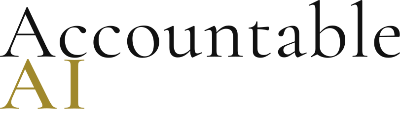

Describe where AI output enters a workflow and what evidence remains around the human decision.
BAT Challenge
Can your AI-assisted workflow be reconstructed later?
The BAT Challenge invites people working with AI-assisted processes to describe a real or representative workflow and test whether its evidence trail would stand up under later review.

BAT means Backward Accountability Traceability: starting from an outcome and tracing back through AI contribution, review, evidence, and rationale.
Case triage, clinical or research review, compliance checks, grant scoring, HR screening, claims handling, customer support, and policy drafting.
Submit without naming your organisation, clients, patients, customers, or confidential systems. Representative workflows are welcome.
The aim is to understand where AI use creates accountability gaps between policy, live work, evidence capture, and review.
Introduction
BAT looks backwards from the moment accountability is needed.
Many AI governance conversations focus on the tool. BAT focuses on what happened when someone relied on the output.
Who relied on it, what was checked, what evidence was available, and whether the final decision can be explained by someone who was not present at the time.
BAT is an active research methodology and remains under development.
Use the form below to share one workflow. It can be live, planned, paused, or hypothetical, as long as it reflects a realistic operational pattern.
Submit a Workflow
Take the BAT Challenge.
This challenge collects workflow examples to test and challenge BAT. Please avoid confidential, personal, or identifying details.
Use of Submissions
How your submission supports BAT research.
Submissions will be reviewed to identify recurring patterns in AI workflow evidence, human review, accountability handoffs, and reconstructability gaps. Insights may inform future writing, talks, research notes, and development of the BAT methodology.
BAT is an active research methodology. Participation helps test whether the method reflects operational reality across different sectors and workflow types.